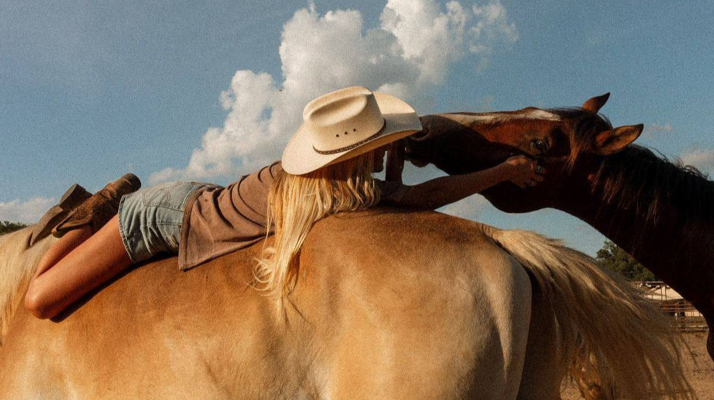

Конные клубы
Москвы
Проверенные места, где можно научиться ездить верхом,
взять лошадь в аренду или отправиться на прогулку.

Мы собрали для вас список конных клубов, которые находятся в живописных парках и лесопарках столицы. Многие из них предлагают услуги для новичков: пробные занятия, фотосессии и прогулки в сопровождении опытного инструктора. Выбирайте клуб рядом с вашим любимым маршрутом!
Клубы на северо-западе (Серебряный Бор)
Дом пёстрой лошади
Адрес: 1-я Лыковская ул., 66, Москва.
Этот клуб известен своим трепетным отношением к лошадям и уютной атмосферой. Здесь отлично подходят к обучению детей и взрослых с нуля, а также проводят терапевтические занятия.
Аргамак
Адрес: Островная ул., 2, стр. 2, Москва.
Клуб предлагает как индивидуальные, так и групповые занятия. Есть возможность выездов на природу и прогулок вдоль Москвы-реки.
Клубы на востоке (Лосиный Остров)
КСК Волшебный лес
Адрес: Лосиноостровская ул., вл50, Москва.
Настоящий рай для любителей верховой езды в лесу. Клуб предлагает прогулки по лесным тропам, обучение и постой лошадей.
Конный клуб Яуза
Адрес: ул. Богатырский Мост, 17, Москва.
Удобно расположенный клуб с хорошей манежной площадкой. Подходит для регулярных тренировок и прогулок вдоль реки Яуза.
Инвакон
Адрес: Лосиноостровская ул., 14, Москва.
Специализированный центр, который занимается иппотерапией и адаптивной верховой ездой. Также здесь проводят занятия для здоровых всадников.
Клубы на юго-востоке (Кузьминки)
Эквилан Спорт
Адрес: Москва, Юго-Восточный административный округ, район Кузьминки.
Современный спортивный комплекс. Здесь готовят спортсменов, но также проводят обучение для любителей и организуют конные прогулки по парку Кузьминки.
Клубы на юго-западе и юге
Прованс
Адрес: Новоясеневский просп., 42А, Москва.
Уютный клуб с европейским названием, расположенный в районе Битцевского леса. Отличное место для спокойных прогулок и фотосессий.
Казачий хутор
Адрес: Рассветная аллея, 3А, Москва.
Клуб с казачьими традициями. Здесь можно не только научиться ездить верхом, но и узнать больше о культуре и обычаях, а также покататься на лошадях в живописном лесу.
Перед посещением клуба обязательно позвоните и уточните наличие свободных мест, расписание и цены. В некоторых клубах требуется предварительная запись за несколько дней.